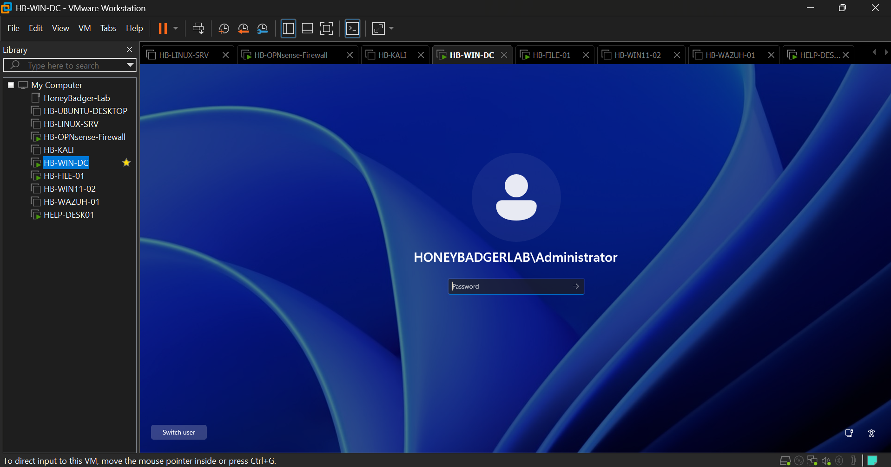

root@honeybadgerlab:~$ ./initialize_lab.sh
HoneyBadger Lab
Enterprise IT • Cybersecurity • Infrastructure
A hands-on enterprise home lab built to develop practical experience in system administration, networking, cybersecurity, help desk operations, SIEM monitoring, Active Directory, virtualization, and infrastructure management.
Lab Architecture
HoneyBadger Lab is an enterprise-style virtual IT and cybersecurity environment designed for hands-on experience with systems administration, networking, security monitoring, help desk operations, and endpoint support.

Live Virtual Lab Environment
HoneyBadger Lab is deployed as a multi-system virtual environment using VMware Workstation. The lab includes Windows Server, Active Directory, Windows endpoints, Linux servers, OPNsense, Wazuh SIEM, Kali Linux, file services, and GLPI help desk services.

VMware Workstation environment hosting the HoneyBadger Lab infrastructure and security systems.
LAB ENVIRONMENT
Enterprise Infrastructure
The HoneyBadger Lab simulates a small enterprise network with centralized identity management, endpoint security, monitoring, firewall protection, ticket management, and remote administration.
Active Directory
Windows Server domain services, users, groups, OUs and authentication.
Group Policy
Centralized Windows configuration, security policies and user management.
OPNsense
Firewall, routing, network segmentation and security controls.
Wazuh SIEM
Endpoint monitoring, security analytics, log collection and alerting.
GLPI Help Desk
ITSM ticketing integrated with Active Directory through LDAP.
Linux
Linux server administration, SSH, services and security configuration.
HANDS-ON EXPERIENCE
Lab Projects
Active Directory
Domain deployment, organizational units, users and security groups.
02Group Policy
Enterprise policy configuration and centralized workstation management.
03File Server
Department shares, NTFS permissions and mapped network drives.
04OPNsense Firewall
Network routing, firewall rules and infrastructure security.
05Wazuh SIEM
Endpoint agents, event monitoring and centralized security visibility.
06GLPI Help Desk
LDAP integration, ticket workflows and enterprise IT support.
07Linux Server
Linux administration, networking and server services.
08Kali Security
Security testing and defensive cybersecurity exercises.
09Remote Access
Secure remote administration using RDP and private network access.